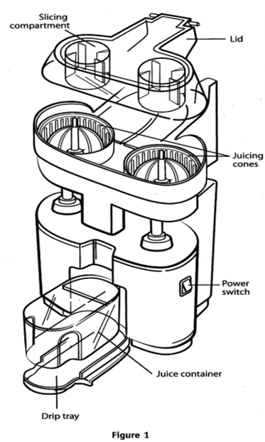

<!-- 원본: GENERAL30/reading (레거시 서버에서 2026-11-14 수집, 정답 제거) -->
<div class="legacy-content"><div id="pageContainer">
<div class="page" id="page-0">
<div class="flex flex-col md:flex-row gap-6">
<div class="w-full md:w-1/2 max-h-[600px] overflow-y-auto">
<h3 class="text-xl font-semibold text-purple-800 mb-4">You are advised to spend 20
                                    minutes on question 1-14.
                                </h3>
<br/>
<div class="question mb-6">
<div>
<h2 style="font-size:24px;"><b>SECTION 1 QUESTIONS 1-14</b></h2><br/>
<h2 style="font-size:22px;"><b>Questions 1-5</b></h2>
<br/>
<p>
                                            The following table compares eight different brands of fruit and vegetable
                                            juicing machines.
                                            The scores are out of ten, with overall scores lower than 5 indicating that
                                            the machine is not recommended.
                                        </p>
<br/>
<table>
<thead>
<tr>
<th>Brand</th>
<th>Juicing capacity (mls)</th>
<th>Ease of use</th>
<th>Safety</th>
<th>After-sales service</th>
<th>Ease of cleaning</th>
<th>Overall score</th>
<th>Warranty (years)</th>
<th>Price ($)</th>
</tr>
</thead>
<tbody>
<tr>
<td><b>A</b></td>
<td>600</td>
<td>7</td>
<td>8</td>
<td>5</td>
<td>7</td>
<td>7</td>
<td>2</td>
<td>198</td>
</tr>
<tr>
<td><b>B</b></td>
<td>600</td>
<td>3</td>
<td>5</td>
<td>5</td>
<td>3</td>
<td>3</td>
<td>1</td>
<td>170</td>
</tr>
<tr>
<td><b>C</b></td>
<td>800</td>
<td>8</td>
<td>6</td>
<td>5</td>
<td>7</td>
<td>6</td>
<td>1</td>
<td>167</td>
</tr>
<tr>
<td><b>D</b></td>
<td>1000</td>
<td>8</td>
<td>8</td>
<td>8</td>
<td>6</td>
<td>8</td>
<td>2</td>
<td>163</td>
</tr>
<tr>
<td><b>E</b></td>
<td>750</td>
<td>4</td>
<td>3</td>
<td>5</td>
<td>4</td>
<td>3</td>
<td>1</td>
<td>155</td>
</tr>
<tr>
<td><b>F</b></td>
<td>500</td>
<td>8</td>
<td>8</td>
<td>4</td>
<td>8</td>
<td>6</td>
<td>1</td>
<td>149</td>
</tr>
<tr>
<td><b>G</b></td>
<td>600</td>
<td>6</td>
<td>5</td>
<td>5</td>
<td>5</td>
<td>4</td>
<td>1</td>
<td>135</td>
</tr>
<tr>
<td><b>H</b></td>
<td>600</td>
<td>5</td>
<td>6</td>
<td>6</td>
<td>4</td>
<td>5</td>
<td>2</td>
<td>120</td>
</tr>
</tbody>
</table>
</div>
</div>
<br/>
<div class="text-gray-700 leading-relaxed">
<div style="width:800px; border:1px solid #bbb; padding:20px;">
<b>Read the following operating instructions for a fruit juicer.</b>
<br/>
<center><b>To Operate the juicer</b></center><br/>
<b>1.</b> First ensure juice container is in position and then press power
                                        switch on side of motor base to the ‘ON’ position.
                                        <br/>
<div style="height:10px"></div>
<b>2.</b> To begin the operation, place an orange into slicing compartment
                                        with top (ie stalk end) facing the left side of compartment (see Figure 1).
                                        Lower lid to cut orange through centre – excess juice will run into juice
                                        container.
                                        <br/>
<div style="height:10px"></div>
<b>3.</b> Place orange halves on cones one at a time.
                                        <br/>
<div style="height:10px"></div>
<b>4.</b> If juicing only one orange, press both cones simultaneously to
                                        begin operation. Juice will flow into the container below. Appliance will not
                                        operate by pressure on one cone only – both cones must be loaded with fruit.
                                        Proceed to step 7.
                                        <br/>
<div style="height:10px"></div>
<b>5.</b> If juicing more than one orange, place the next orange in the
                                        slicing compartment. Lower lid and, using both hands on either side of the lid,
                                        apply firm pressure. This will start the juicing operation and cut the whole
                                        orange in half at the same time.
                                        <br/>
<div style="height:10px"></div>
<b>6.</b> When halves are fully juiced, discard skins and repeat step 5
                                        until the juice container is full (approximately 500 mls). Do not fill above the
                                        max. fill line.
                                        <br/>
<div style="height:10px"></div>
<b>7.</b> To serve the juice, slide out the juice container. The removable
                                        sieve will strain the excess pulp and any seeds from the juice. If you prefer a
                                        higher juice fibre beverage simply remove the sieve. The drip tray will catch
                                        any juice remaining in the juicing chamber.
                                        <br/>

<br/>
<br/>
                                        Breville Holdings Limited, Instructions for use of the Breville Double-Up Juicer
                                    </div>
</div>
</div>
<div class="w-full md:w-1/2 max-h-[600px] overflow-y-auto">
<div class="question mb-6">
<div>
<b>1.</b> Which brand offers the greatest assistance in the case of
                                        problems after purchase? <input autocomplete="off" class="border border-purple-300 rounded px-3 py-2 w-full bg-white text-gray-800" name="q1" placeholder="(1)" style="width:150px; border:0; border-bottom:1px solid #000; text-align:center;" type="text"/><br/>
<div style="height:5px"></div>
<b>2.</b> Which brand appears to be the most dangerous? <input autocomplete="off" class="border border-purple-300 rounded px-3 py-2 w-full bg-white text-gray-800" name="q2" placeholder="(2)" style="width:150px; border:0; border-bottom:1px solid #000; text-align:center;" type="text"/><br/>
<div style="height:5px"></div>
<b>3.</b> Which brand would be most unsuitable in preparing juice for a
                                        large family? <input autocomplete="off" class="border border-purple-300 rounded px-3 py-2 w-full bg-white text-gray-800" name="q3" placeholder="(3)" style="width:150px; border:0; border-bottom:1px solid #000; text-align:center;" type="text"/><br/>
<div style="height:5px"></div>
<b>4.</b> Which brand is the most difficult to use and keep
                                        clean? <input autocomplete="off" class="border border-purple-300 rounded px-3 py-2 w-full bg-white text-gray-800" name="q4" placeholder="(4)" style="width:150px; border:0; border-bottom:1px solid #000; text-align:center;" type="text"/><br/>
<div style="height:5px"></div>
<b>5.</b> Which three brands does the survey not recommend? <input autocomplete="off" class="border border-purple-300 rounded px-3 py-2 w-full bg-white text-gray-800" name="q5" placeholder="(5)" style="width:150px; border:0; border-bottom:1px solid #000; text-align:center;" type="text"/>
<br/>
<h2 style="font-size:22px;"><b>Questions 6-14</b></h2>
<br/>
<p>
                                            Look at the following statements about operating a juicer.
                                        </p>
</div>
<br/>
<p class="mb-6">
                                        In boxes 6-14 on the answer sheet write:<br/><br/>
<b>TRUE</b>   if the statement agrees with the information<br/>
<b>FALSE</b>   if the statement contradicts the information<br/>
<b>NOT GIVEN</b>   if there is no information on this
                                    </p>
<br/>
<p><b>6</b> The juicer will cut the oranges into halves.</p>
<div class="space-y-2 ml-6" id="question-6">
<label class="flex items-center"><input autocomplete="off" class="mr-2 w-4 h-4 accent-purple-600" name="q6" type="radio" value="TRUE"/><b>TRUE</b></label>
<label class="flex items-center"><input autocomplete="off" class="mr-2 w-4 h-4 accent-purple-600" name="q6" type="radio" value="FALSE"/><b>FALSE</b></label>
<label class="flex items-center"><input autocomplete="off" class="mr-2 w-4 h-4 accent-purple-600" name="q6" type="radio" value="NOT GIVEN"/><b>NOT GIVEN</b></label>
</div>
<div style="height:20px;"></div>
<p><b>7</b> Oranges should be fresh before juicing.</p>
<div class="space-y-2 ml-6" id="question-7">
<label class="flex items-center"><input autocomplete="off" class="mr-2 w-4 h-4 accent-purple-600" name="q7" type="radio" value="TRUE"/><b>TRUE</b></label>
<label class="flex items-center"><input autocomplete="off" class="mr-2 w-4 h-4 accent-purple-600" name="q7" type="radio" value="FALSE"/><b>FALSE</b></label>
<label class="flex items-center"><input autocomplete="off" class="mr-2 w-4 h-4 accent-purple-600" name="q7" type="radio" value="NOT GIVEN"/><b>NOT GIVEN</b></label>
</div>
<div style="height:20px;"></div>
<p><b>8</b> Two oranges can be juiced at the same time.</p>
<div class="space-y-2 ml-6" id="question-8">
<label class="flex items-center"><input autocomplete="off" class="mr-2 w-4 h-4 accent-purple-600" name="q8" type="radio" value="TRUE"/><b>TRUE</b></label>
<label class="flex items-center"><input autocomplete="off" class="mr-2 w-4 h-4 accent-purple-600" name="q8" type="radio" value="FALSE"/><b>FALSE</b></label>
<label class="flex items-center"><input autocomplete="off" class="mr-2 w-4 h-4 accent-purple-600" name="q8" type="radio" value="NOT GIVEN"/><b>NOT GIVEN</b></label>
</div>
<div style="height:20px;"></div>
<p><b>9</b> The machine can juice just half an orange if required.</p>
<div class="space-y-2 ml-6" id="question-9">
<label class="flex items-center"><input autocomplete="off" class="mr-2 w-4 h-4 accent-purple-600" name="q9" type="radio" value="TRUE"/><b>TRUE</b></label>
<label class="flex items-center"><input autocomplete="off" class="mr-2 w-4 h-4 accent-purple-600" name="q9" type="radio" value="FALSE"/><b>FALSE</b></label>
<label class="flex items-center"><input autocomplete="off" class="mr-2 w-4 h-4 accent-purple-600" name="q9" type="radio" value="NOT GIVEN"/><b>NOT GIVEN</b></label>
</div>
<div style="height:20px;"></div>
<p><b>10</b> The oranges can be of different sizes.</p>
<div class="space-y-2 ml-6" id="question-10">
<label class="flex items-center"><input autocomplete="off" class="mr-2 w-4 h-4 accent-purple-600" name="q10" type="radio" value="TRUE"/><b>TRUE</b></label>
<label class="flex items-center"><input autocomplete="off" class="mr-2 w-4 h-4 accent-purple-600" name="q10" type="radio" value="FALSE"/><b>FALSE</b></label>
<label class="flex items-center"><input autocomplete="off" class="mr-2 w-4 h-4 accent-purple-600" name="q10" type="radio" value="NOT GIVEN"/><b>NOT
                                                GIVEN</b></label>
</div>
<div style="height:20px;"></div>
<p><b>11</b> The machine can cut and juice oranges at the same time.</p>
<div class="space-y-2 ml-6" id="question-11">
<label class="flex items-center"><input autocomplete="off" class="mr-2 w-4 h-4 accent-purple-600" name="q11" type="radio" value="TRUE"/><b>TRUE</b></label>
<label class="flex items-center"><input autocomplete="off" class="mr-2 w-4 h-4 accent-purple-600" name="q11" type="radio" value="FALSE"/><b>FALSE</b></label>
<label class="flex items-center"><input autocomplete="off" class="mr-2 w-4 h-4 accent-purple-600" name="q11" type="radio" value="NOT GIVEN"/><b>NOT
                                                GIVEN</b></label>
</div>
<div style="height:20px;"></div>
<p><b>12</b> The container will hold about half a litre of juice.</p>
<div class="space-y-2 ml-6" id="question-12">
<label class="flex items-center"><input autocomplete="off" class="mr-2 w-4 h-4 accent-purple-600" name="q12" type="radio" value="TRUE"/><b>TRUE</b></label>
<label class="flex items-center"><input autocomplete="off" class="mr-2 w-4 h-4 accent-purple-600" name="q12" type="radio" value="FALSE"/><b>FALSE</b></label>
<label class="flex items-center"><input autocomplete="off" class="mr-2 w-4 h-4 accent-purple-600" name="q12" type="radio" value="NOT GIVEN"/><b>NOT
                                                GIVEN</b></label>
</div>
<div style="height:20px;"></div>
<p><b>13</b> You must separate the seeds by hand as the juicer does not do this.</p>
<div class="space-y-2 ml-6" id="question-13">
<label class="flex items-center"><input autocomplete="off" class="mr-2 w-4 h-4 accent-purple-600" name="q13" type="radio" value="TRUE"/><b>TRUE</b></label>
<label class="flex items-center"><input autocomplete="off" class="mr-2 w-4 h-4 accent-purple-600" name="q13" type="radio" value="FALSE"/><b>FALSE</b></label>
<label class="flex items-center"><input autocomplete="off" class="mr-2 w-4 h-4 accent-purple-600" name="q13" type="radio" value="NOT GIVEN"/><b>NOT
                                                GIVEN</b></label>
</div>
<div style="height:20px;"></div>
<p><b>14</b> Different degrees of fibre strength can be produced.</p>
<div class="space-y-2 ml-6" id="question-14">
<label class="flex items-center"><input autocomplete="off" class="mr-2 w-4 h-4 accent-purple-600" name="q14" type="radio" value="TRUE"/><b>TRUE</b></label>
<label class="flex items-center"><input autocomplete="off" class="mr-2 w-4 h-4 accent-purple-600" name="q14" type="radio" value="FALSE"/><b>FALSE</b></label>
<label class="flex items-center"><input autocomplete="off" class="mr-2 w-4 h-4 accent-purple-600" name="q14" type="radio" value="NOT GIVEN"/><b>NOT
                                                GIVEN</b></label>
</div>
</div>
</div>
</div>
</div>
<div class="page" id="page-1">
<div class="flex flex-col md:flex-row gap-6">
<div "="" class="w-full md:w-1/2 max-h-[600px] overflow-y-auto">
<h3 class="text-xl font-semibold text-purple-800 mb-4">Passage 2: You are advised
                                to
                                spend 20 minutes on questions 15-27.</h3>
<div class="text-gray-700 leading-relaxed">
<div style="width:800px; border:1px solid #bbb; padding:20px;">
<b>Carlingford College</b><br/>
<p>150 Manidis Road Carlingford NSW 2303</p><br/>
<p>18 August</p><br/>
                                        Dear Student<br/>
                                        Congratulations on being accepted to our summer school program. Every summer we
                                        provide a range of accommodation options to suit the needs of our broad student
                                        base.<br/>
                                        The majority of our students choose to stay on campus in our student residences.
                                        These residences are moderately priced and are dormitory-style halls with shared
                                        bathrooms and access to communal quiet study areas. Breakfast and dinner are
                                        served in the college refectory and are included in the weekly tariff.<br/>
                                        The other on-campus option available is single rooms with private bathrooms. The
                                        tariff includes accommodation only but students have access to communal
                                        kitchens. Due to the high demand for these every summer, a lottery is conducted
                                        eight weeks prior to the commencement of courses and rooms are allocated
                                        accordingly.<br/>
                                        In terms of lodgings available off-campus, students can either choose to take a
                                        lease on an apartment or stay with a family as part of our Carlingford College
                                        Homestay Programme. Students who would like to lease an apartment over the
                                        summer are encouraged to check student notice boards, accommodation links on the
                                        Student Union website and local real estate agents.<br/>
                                        The Homestay Program is a popular alternative offered to students. Students are
                                        housed with local families and are given a private room which has space to
                                        study. Our team carefully assesses all families, then matches students according
                                        to their requirements. The tariff is half-board so students only need to provide
                                        their own lunch every day.<br/>
                                        Should you be interested in any of these accommodation options, please complete
                                        the enclosed application form and submit it no later than 2 October. Please note
                                        that Market Research Analysis 2A has a residential requirement (dormitory-style
                                        student residences), therefore enrolment in this course will not be confirmed
                                        until an application for accommodation has been received by this office.<br/>
                                        Do not hesitate to contact me for any further information.<br/>
                                        Yours truly<br/><br/>
                                        Wendy Dickens<br/>
                                        Accommodation Officer<br/>
                                        Carlingford College
                                    </div>
<br/>
<div style="width:800px; border:1px solid #bbb; padding:20px;">
<b>CARLINGFORD COLLEGE ACCOMMODATION SERVICE<br/>
                                            Student Testimonials</b><br/>
<b>A – Iwan, 22, Economics</b><br/>
<p>‘One of the reasons I chose Carlingford was because it was in a big city. I
                                            come from a small town so I was really looking forward to making the most of
                                            my time here. So, I decided to stay in a homestay because I really knew
                                            nothing about the place and I thought the family could help me settle in. I
                                            asked the accommodation office for a family who lived close to the city and
                                            they had a few in the area. It’s great because I can get to the city easily
                                            and after a night out with my mates it’s easy to get home. There are so many
                                            fun things to do here. Studying isn’t everything!’</p>
<br/>
<div style="height:5px"></div>
<b>B – Karen, 35, Management Training</b><br/>
<p>‘The 2 months I spent at Carlingford summer school were so valuable to my
                                            career. It was a tough time because the course was quite intensive. I had my
                                            head down studying most of the time, actually. Luckily I found a nice quiet
                                            apartment not far from Carlingford. It meant that I could go home at night
                                            and keep on studying free from distraction. Being a little bit older than
                                            most students on campus, I wasn’t really into the on-campus social scene.
                                            And I’m so used to living on my own that I was glad I had my own place so I
                                            could come home and relax.’</p>
<br/>
<div style="height:5px"></div>
<b>C – Marcela, 20, Accounting</b><br/>
<p>‘When I moved into the dorms at Carlingford it was the first time I’d
                                            lived away from home. My parents were a bit worried about me moving to
                                            the city so they made me stay on campus. I’m really glad I did it now
                                            because the friends I made in my first year here are still my best
                                            friends. We were all in the same situation, new city, new teachers ...
                                            but we helped each other through! In fact, since then we’ve rented a
                                            place together and it’s going well. I love it because I can cook my own
                                            food now. I’m not a great cook but I’m learning.’
                                        </p>
<br/>
<div style="height:5px"></div>
<b>D – Roger, 25, Design Studies</b><br/>
<p>‘I remember looking at the accommodation options before I started at
                                            Carlingford, and I thought that there was no way I could live in a share
                                            dorm. The idea of sharing a bathroom didn’t appeal to me. So I had my
                                            own room for a few weeks but then I realised I was spending most of my
                                            time in the dorms anyway because that’s where old friends from my
                                            hometown were. So in the end I moved there and I’ve been there for two
                                            years. My advice is, if you get a chance, come and take a look at the
                                            range of places available before you decide.’</p>
</div>
</div>
</div>
<div class="w-full md:w-1/2 max-h-[600px] overflow-y-auto">
<div class="question mb-6">
<div>
<h2 style="font-size:24px;"><b>SECTION 2 QUESTIONS 15-27</b></h2><br/>
<h2 style="font-size:22px;"><b>Questions 15-21</b></h2>
<br/>
<p class="mb-6">
                                            In boxes <b>15-21</b> on the answer sheet write:<br/><br/>
<b>TRUE</b>   if the statement agrees with the
                                            information<br/>
<b>FALSE</b>   if the statement contradicts the
                                            information<br/>
<b>NOT GIVEN</b>   if there is no information on this
                                        </p>
</div>
<br/>
<div>
<p><b>15</b> Most Carlingford College students stay in dormitory rooms.</p>
<div class="space-y-2 ml-6" id="question-15">
<label class="flex items-center"><input autocomplete="off" class="mr-2 w-4 h-4 accent-purple-600" name="q15" type="radio" value="TRUE"/><b>TRUE</b></label>
<label class="flex items-center"><input autocomplete="off" class="mr-2 w-4 h-4 accent-purple-600" name="q15" type="radio" value="FALSE"/><b>FALSE</b></label>
<label class="flex items-center"><input autocomplete="off" class="mr-2 w-4 h-4 accent-purple-600" name="q15" type="radio" value="NOT GIVEN"/><b>NOT
                                                    GIVEN</b></label>
</div>
<div style="height:10px;"></div>
<p><b>16</b> Dormitory rooms are the cheapest alternative.</p>
<div class="space-y-2 ml-6" id="question-16">
<label class="flex items-center"><input autocomplete="off" class="mr-2 w-4 h-4 accent-purple-600" name="q16" type="radio" value="TRUE"/><b>TRUE</b></label>
<label class="flex items-center"><input autocomplete="off" class="mr-2 w-4 h-4 accent-purple-600" name="q16" type="radio" value="FALSE"/><b>FALSE</b></label>
<label class="flex items-center"><input autocomplete="off" class="mr-2 w-4 h-4 accent-purple-600" name="q16" type="radio" value="NOT GIVEN"/><b>NOT
                                                    GIVEN</b></label>
</div>
<div style="height:10px;"></div>
<p><b>17</b> Private rooms are popular at certain times of year.</p>
<div class="space-y-2 ml-6" id="question-17">
<label class="flex items-center"><input autocomplete="off" class="mr-2 w-4 h-4 accent-purple-600" name="q17" type="radio" value="TRUE"/><b>TRUE</b></label>
<label class="flex items-center"><input autocomplete="off" class="mr-2 w-4 h-4 accent-purple-600" name="q17" type="radio" value="FALSE"/><b>FALSE</b></label>
<label class="flex items-center"><input autocomplete="off" class="mr-2 w-4 h-4 accent-purple-600" name="q17" type="radio" value="NOT GIVEN"/><b>NOT
                                                    GIVEN</b></label>
</div>
<div style="height:10px;"></div>
<p><b>18</b> Early applications are necessary to secure single rooms.</p>
<div class="space-y-2 ml-6" id="question-18">
<label class="flex items-center"><input autocomplete="off" class="mr-2 w-4 h-4 accent-purple-600" name="q18" type="radio" value="TRUE"/><b>TRUE</b></label>
<label class="flex items-center"><input autocomplete="off" class="mr-2 w-4 h-4 accent-purple-600" name="q18" type="radio" value="FALSE"/><b>FALSE</b></label>
<label class="flex items-center"><input autocomplete="off" class="mr-2 w-4 h-4 accent-purple-600" name="q18" type="radio" value="NOT GIVEN"/><b>NOT
                                                    GIVEN</b></label>
</div>
<div style="height:10px;"></div>
<p><b>19</b> It is difficult to find leased accommodation.</p>
<div class="space-y-2 ml-6" id="question-19">
<label class="flex items-center"><input autocomplete="off" class="mr-2 w-4 h-4 accent-purple-600" name="q19" type="radio" value="TRUE"/><b>TRUE</b></label>
<label class="flex items-center"><input autocomplete="off" class="mr-2 w-4 h-4 accent-purple-600" name="q19" type="radio" value="FALSE"/><b>FALSE</b></label>
<label class="flex items-center"><input autocomplete="off" class="mr-2 w-4 h-4 accent-purple-600" name="q19" type="radio" value="NOT GIVEN"/><b>NOT
                                                    GIVEN</b></label>
</div>
<div style="height:10px;"></div>
<p><b>20</b> None of the alternatives includes lunch.</p>
<div class="space-y-2 ml-6" id="question-20">
<label class="flex items-center"><input autocomplete="off" class="mr-2 w-4 h-4 accent-purple-600" name="q20" type="radio" value="TRUE"/><b>TRUE</b></label>
<label class="flex items-center"><input autocomplete="off" class="mr-2 w-4 h-4 accent-purple-600" name="q20" type="radio" value="FALSE"/><b>FALSE</b></label>
<label class="flex items-center"><input autocomplete="off" class="mr-2 w-4 h-4 accent-purple-600" name="q20" type="radio" value="NOT GIVEN"/><b>NOT
                                                    GIVEN</b></label>
</div>
<div style="height:10px;"></div>
<p><b>21</b> Students choose their own homestay family.</p>
<div class="space-y-2 ml-6" id="question-21">
<label class="flex items-center"><input autocomplete="off" class="mr-2 w-4 h-4 accent-purple-600" name="q21" type="radio" value="TRUE"/><b>TRUE</b></label>
<label class="flex items-center"><input autocomplete="off" class="mr-2 w-4 h-4 accent-purple-600" name="q21" type="radio" value="FALSE"/><b>FALSE</b></label>
<label class="flex items-center"><input autocomplete="off" class="mr-2 w-4 h-4 accent-purple-600" name="q21" type="radio" value="NOT GIVEN"/><b>NOT
                                                    GIVEN</b></label>
</div>
</div>
</div>
<div class="question mb-6">
<div>
<h2 style="font-size:22px;"><b>Questions 22-27</b></h2>
<br/>
<p class="mb-4">
                                            Look at the four student testimonials about accommodation <b>A–D</b>.
                                        </p>
<p class="mb-4">
                                            Match each statement with the person who made it.
                                        </p>
</div>
<div>
<p class="mb-6">
                                            Choose the correct letter (<b>A–D</b>) in boxes 22–27 on the answer
                                            sheet.<br/>
<b>NB</b> You may use any letter more than once.
                                        </p>
<br/>
<table style="width:700px; border-collapse: collapse;">
<thead>
<tr>
<th colspan="2">List of people</th>
</tr>
</thead>
<tbody>
<tr style="border:0px;">
<td style="border:0px; width:5px;"><b>A</b></td>
<td style="border:0px; width:695px;">Iwan</td>
</tr>
<tr style="border:0px;">
<td style="border:0px; width:5px;"><b>B</b></td>
<td style="border:0px; width:695px;">Karen</td>
</tr>
<tr style="border:0px;">
<td style="border:0px; width:5px;"><b>C</b></td>
<td style="border:0px; width:695px;">Marcela</td>
</tr>
<tr style="border:0px;">
<td style="border:0px; width:5px;"><b>D</b></td>
<td style="border:0px; width:695px;">Roger</td>
</tr>
</tbody>
</table>
<div style="height:10px;"></div>
<p><b>22</b> Privacy is important.</p>
<div class="space-y-2 ml-6" id="question-22" style="display:flex; justify-content: left;">
<label class="flex items-center"><input autocomplete="off" class="mr-2 w-4 h-4 accent-purple-600" name="q22" type="radio" value="A"/><b>A</b></label>  
                                            <label class="flex items-center"><input autocomplete="off" class="mr-2 w-4 h-4 accent-purple-600" name="q22" type="radio" value="B"/><b>B</b></label>  
                                            <label class="flex items-center"><input autocomplete="off" class="mr-2 w-4 h-4 accent-purple-600" name="q22" type="radio" value="C"/><b>C</b></label>  
                                            <label class="flex items-center"><input autocomplete="off" class="mr-2 w-4 h-4 accent-purple-600" name="q22" type="radio" value="D"/><b>D</b></label>
</div>
<br/>
<div style="height:10px;"></div>
<p><b>23</b> Personal inspections of the accommodation are recommended.</p>
<div class="space-y-2 ml-6" id="question-23" style="display:flex; justify-content: left;">
<label class="flex items-center"><input autocomplete="off" class="mr-2 w-4 h-4 accent-purple-600" name="q23" type="radio" value="A"/><b>A</b></label>  
                                            <label class="flex items-center"><input autocomplete="off" class="mr-2 w-4 h-4 accent-purple-600" name="q23" type="radio" value="B"/><b>B</b></label>  
                                            <label class="flex items-center"><input autocomplete="off" class="mr-2 w-4 h-4 accent-purple-600" name="q23" type="radio" value="C"/><b>C</b></label>  
                                            <label class="flex items-center"><input autocomplete="off" class="mr-2 w-4 h-4 accent-purple-600" name="q23" type="radio" value="D"/><b>D</b></label>
</div>
<br/>
<div style="height:10px;"></div>
<p><b>24</b> A suitable environment for studying is important.</p>
<div class="space-y-2 ml-6" id="question-24" style="display:flex; justify-content: left;">
<label class="flex items-center"><input autocomplete="off" class="mr-2 w-4 h-4 accent-purple-600" name="q24" type="radio" value="A"/><b>A</b></label>  
                                            <label class="flex items-center"><input autocomplete="off" class="mr-2 w-4 h-4 accent-purple-600" name="q24" type="radio" value="B"/><b>B</b></label>  
                                            <label class="flex items-center"><input autocomplete="off" class="mr-2 w-4 h-4 accent-purple-600" name="q24" type="radio" value="C"/><b>C</b></label>  
                                            <label class="flex items-center"><input autocomplete="off" class="mr-2 w-4 h-4 accent-purple-600" name="q24" type="radio" value="D"/><b>D</b></label>
</div>
<br/>
<div style="height:10px;"></div>
<p><b>25</b> A student’s family might influence their choice of accommodation.
                                        </p>
<div class="space-y-2 ml-6" id="question-25" style="display:flex; justify-content: left;">
<label class="flex items-center"><input autocomplete="off" class="mr-2 w-4 h-4 accent-purple-600" name="q25" type="radio" value="A"/><b>A</b></label>  
                                            <label class="flex items-center"><input autocomplete="off" class="mr-2 w-4 h-4 accent-purple-600" name="q25" type="radio" value="B"/><b>B</b></label>  
                                            <label class="flex items-center"><input autocomplete="off" class="mr-2 w-4 h-4 accent-purple-600" name="q25" type="radio" value="C"/><b>C</b></label>  
                                            <label class="flex items-center"><input autocomplete="off" class="mr-2 w-4 h-4 accent-purple-600" name="q25" type="radio" value="D"/><b>D</b></label>
</div>
<br/>
<div style="height:10px;"></div>
<p><b>26</b> A student’s age can affect which accommodation type is the most
                                            suitable.</p>
<div class="space-y-2 ml-6" id="question-26" style="display:flex; justify-content: left;">
<label class="flex items-center"><input autocomplete="off" class="mr-2 w-4 h-4 accent-purple-600" name="q26" type="radio" value="A"/><b>A</b></label>  
                                            <label class="flex items-center"><input autocomplete="off" class="mr-2 w-4 h-4 accent-purple-600" name="q26" type="radio" value="B"/><b>B</b></label>  
                                            <label class="flex items-center"><input autocomplete="off" class="mr-2 w-4 h-4 accent-purple-600" name="q26" type="radio" value="C"/><b>C</b></label>  
                                            <label class="flex items-center"><input autocomplete="off" class="mr-2 w-4 h-4 accent-purple-600" name="q26" type="radio" value="D"/><b>D</b></label>
</div>
<br/>
<div style="height:10px;"></div>
<p><b>27</b> Local people can give useful information about the area.</p>
<div class="space-y-2 ml-6" id="question-23" style="display:flex; justify-content: left;">
<label class="flex items-center"><input autocomplete="off" class="mr-2 w-4 h-4 accent-purple-600" name="q27" type="radio" value="A"/><b>A</b></label>  
                                            <label class="flex items-center"><input autocomplete="off" class="mr-2 w-4 h-4 accent-purple-600" name="q27" type="radio" value="B"/><b>B</b></label>  
                                            <label class="flex items-center"><input autocomplete="off" class="mr-2 w-4 h-4 accent-purple-600" name="q27" type="radio" value="C"/><b>C</b></label>  
                                            <label class="flex items-center"><input autocomplete="off" class="mr-2 w-4 h-4 accent-purple-600" name="q27" type="radio" value="D"/><b>D</b></label>
</div>
</div>
</div>
</div>
</div>
</div>
<div class="page" id="page-2">
<div class="flex flex-col md:flex-row gap-6">
<div class="w-full md:w-1/2 max-h-[600px] overflow-y-auto">
<h3 class="text-xl font-semibold text-purple-800 mb-4">Passage 3: You are advised to
                                    spend
                                    20 minutes on questions 28-40.
                                </h3>
<div class="text-gray-700 leading-relaxed">
<div style="width:800px; border:1px solid #bbb; padding:20px;">
<b>A history of coffee</b><br/>
<br/>
<div style="height:10px"></div>
<b>A.</b><br/>
<p>There is a story that Kaldi, a goatherd in the Ethiopian highlands in North
                                            Africa, discovered coffee after noticing that berries from a certain tree
                                            made his goats so energetic that they did not want to sleep at night. Kaldi
                                            reported his findings to a monk at the local monastery; the monk made a
                                            drink with the berries and discovered that it kept him alert through the
                                            long hours of evening prayer. Soon the monk shared this information, and
                                            knowledge of the energising effects of the berries began to spread. The
                                            story moved east and coffee reached the Arabian peninsula; from there it
                                            began its journey throughout the world. Though we will never know with
                                            certainty, there may be some truth behind the Kaldi myth. What is certain is
                                            that today coffee is grown in a large number of countries around the world,
                                            and the coffee industries of Asia and Africa, Central and South America, the
                                            islands of the Caribbean and the Pacific can all trace their heritage back
                                            to the trees of the Ethiopian highlands.</p>
<br/>
<div style="height:10px"></div>
<b>B.</b><br/>
<p>The Arabs were the first to cultivate coffee and also the first to trade in
                                            it. By the 15th century, coffee was being grown in the Yemeni district of
                                            Arabia and by the 16th century it was known in Persia, Egypt, Syria and
                                            Turkey. Coffee was not only drunk in homes but also in the many public
                                            coffee houses that began to appear in cities across the Middle East. The
                                            coffee houses were very popular, and people went there for all kinds of
                                            social activity. Not only did they drink coffee and engage in conversation,
                                            but they also listened to music, watched performers, played chess and found
                                            out about the news of the day. In fact, coffee houses became such an
                                            important centre for the exchange of news that they were often referred to
                                            as ‘Schools of the wise.’ News of coffee quickly spread beyond the Arab
                                            world, but the growers and traders there continued to closely guard the
                                            secrets of coffee production in an effort to maintain their monopoly over
                                            the trade.</p>
<br/>
<div style="height:10px"></div>
<b>C.</b><br/>
<p>European travellers to the Middle East brought back stories of the unusual
                                            beverage, and by the 17th century, coffee had made its way to Europe and was
                                            becoming popular across the continent. When it arrived in Italy, there was
                                            considerable controversy over whether the drink was useful or harmful. This
                                            controversy was so great that the Pope was asked to intervene. Before making
                                            a decision, he decided to taste the beverage for himself, and found the
                                            drink so satisfying that he gave it his approval. Coffee houses in the major
                                            cities of England, Austria, France, Germany and Holland were quickly
                                            becoming centres of social activity and communication. In England ‘penny
                                            universities’ sprang up; they were given this name because for a penny (a
                                            small coin), one could purchase a cup of coffee and engage in stimulating
                                            conversation. By the mid-17th century, there were over 300 coffee houses in
                                            London, many of which attracted patrons with common interests, such as
                                            merchants, shippers, brokers and artists. Many businesses grew out of these
                                            specialised coffee houses, including the famous insurance broker Lloyd’s of
                                            London, which came into existence at Edward Lloyd’s Coffee House.</p>
<br/>
<div style="height:10px"></div>
<b>D.</b><br/>
<p>In the mid-1600s, coffee was brought to North America, to New Amsterdam, the
                                            city which later became New York. Though coffee houses rapidly began to
                                            appear, tea continued to be the favoured drink in North America until 1773,
                                            when the colonists revolted against a heavy tax on tea imposed by King
                                            George of England. This revolt, known as the Boston Tea Party, changed the
                                            American preference from tea to coffee.</p>
<br/>
<div style="height:10px"></div>
<b>E.</b><br/>
<p>As demand for the beverage continued to spread, it became more difficult for
                                            the Arabs to maintain their monopoly over coffee production. In the latter
                                            half of the 17th century, the Dutch finally succeeded in obtaining some
                                            seedlings. Although their first attempts to plant them in India failed, they
                                            were successful with their efforts on the island of Java, in what is now
                                            Indonesia. The plants thrived and soon the Dutch had a productive trade in
                                            coffee. They quickly expanded the cultivation of coffee trees to the islands
                                            of Sumatra and Celebes.</p>
<br/>
<div style="height:10px"></div>
<b>F.</b><br/>
<p>Then the Dutch behaved in a way that seems hard to explain. In 1714, the
                                            Mayor of Amsterdam presented a gift of a young coffee plant to King Louis
                                            XIV of France. The king ordered it to be planted in the Royal Botanical
                                            Gardens in Paris and, in 1723, a young naval officer called Gabriel de Clieu
                                            obtained a cutting from the king’s plant. Despite a difficult voyage, with
                                            horrendous weather and an attack by pirates, de Clieu managed to transport
                                            the plant safely to Martinique in the Caribbean. Once planted, the seedling
                                            thrived, and from that one plant 18 million coffee trees spread over the
                                            island of Martinique in the following 50 years. This was also the stock from
                                            which coffee trees spread throughout the Caribbean, South and Central
                                            America.</p>
<br/>
<div style="height:10px"></div>
<b>G.</b><br/>
<p>Coffee is said to have been brought to Brazil by Francisco de Mello Palheta
                                            who was sent by the Emperor to French Guiana to obtain coffee seedlings. But
                                            the French were not willing to share and Palheta was unsuccessful. However,
                                            he was so handsome that the French Governor’s wife was captivated. As a
                                            going-away gift, she presented him with a large bouquet of flowers, and
                                            inside, he found enough coffee seeds to begin what is today a billion-dollar
                                            industry.</p>
<br/>
<div style="height:10px"></div>
<b>H.</b><br/>
<p>In only 100 years, coffee had established itself as a commodity crop
                                            throughout the world. Missionaries and travellers, traders and colonists
                                            continued to carry coffee seeds to new lands and coffee trees were planted
                                            worldwide. Plantations were established in magnificent tropical forests and
                                            on rugged mountain highlands. Some crops flourished and new nations were
                                            established on coffee economies. Fortunes were made and lost. By the end of
                                            the 18th century, coffee had become one of the world’s most profitable
                                            export crops.</p>
<br/>
</div>
</div>
</div>
<div class="w-full md:w-1/2 max-h-[600px] overflow-y-auto">
<p>Read the text below and answer questions 28-40.</p><br/>
<div class="question mb-6">
<div>
<h2 style="font-size:24px;"><b>SECTION 3 QUESTIONS 28-40</b></h2><br/>
<h2 style="font-size:22px;"><b>Questions 28-35</b></h2>
<br/>
<p class="mb-4">
                                            The reading passage <i>‘A history of coffee’</i> has eight paragraphs
                                            labelled <b>A–H</b>.
                                        </p>
</div>
<br/>
<div>
<p class="mb-6">
                                            Which paragraph contains the following information?<br/>
                                            Write the correct letter (<b>A–H</b>) in boxes 28–35 on the answer sheet.
                                        </p>
<p><b>28</b> historical reason for a change of preference in drinks</p>
<div class="ml-6 mb-4">
<input autocomplete="off" class="border border-purple-300 rounded px-3 py-2 w-full bg-white text-gray-800" name="q28" placeholder="(28)" style="width:150px; border:0; border-bottom:1px solid #000; text-align:center;" type="text"/>
</div>
<div style="height:10px;"></div>
<p><b>29</b> a story of how good looks helped one nation’s coffee industry</p>
<div class="ml-6 mb-4">
<input autocomplete="off" class="border border-purple-300 rounded px-3 py-2 w-full bg-white text-gray-800" name="q29" placeholder="(29)" style="width:150px; border:0; border-bottom:1px solid #000; text-align:center;" type="text"/>
</div>
<div style="height:10px;"></div>
<p><b>30</b> a list of Middle Eastern coffee-growing areas</p>
<div class="ml-6 mb-4">
<input autocomplete="off" class="border border-purple-300 rounded px-3 py-2 w-full bg-white text-gray-800" name="q30" placeholder="(30)" style="width:150px; border:0; border-bottom:1px solid #000; text-align:center;" type="text"/>
</div>
<div style="height:10px;"></div>
<p><b>31</b> a description of the dangerous journey of a coffee plant</p>
<div class="ml-6 mb-4">
<input autocomplete="off" class="border border-purple-300 rounded px-3 py-2 w-full bg-white text-gray-800" name="q31" placeholder="(31)" style="width:150px; border:0; border-bottom:1px solid #000; text-align:center;" type="text"/>
</div>
<div style="height:10px;"></div>
<p><b>32</b> a description of a disagreement about the value of coffee</p>
<div class="ml-6 mb-4">
<input autocomplete="off" class="border border-purple-300 rounded px-3 py-2 w-full bg-white text-gray-800" name="q32" placeholder="(32)" style="width:150px; border:0; border-bottom:1px solid #000; text-align:center;" type="text"/>
</div>
<div style="height:10px;"></div>
<p><b>33</b> a mention of an unsuccessful experiment with coffee planting</p>
<div class="ml-6 mb-4">
<input autocomplete="off" class="border border-purple-300 rounded px-3 py-2 w-full bg-white text-gray-800" name="q33" placeholder="(33)" style="width:150px; border:0; border-bottom:1px solid #000; text-align:center;" type="text"/>
</div>
<div style="height:10px;"></div>
<p><b>34</b> a legend about the origins of coffee</p>
<div class="ml-6 mb-4">
<input autocomplete="off" class="border border-purple-300 rounded px-3 py-2 w-full bg-white text-gray-800" name="q34" placeholder="(34)" style="width:150px; border:0; border-bottom:1px solid #000; text-align:center;" type="text"/>
</div>
<div style="height:10px;"></div>
<p><b>35</b> a mention of several types of terrain where coffee has been planted
                                        </p>
<div class="ml-6 mb-4">
<input autocomplete="off" class="border border-purple-300 rounded px-3 py-2 w-full bg-white text-gray-800" name="q35" placeholder="(35)" style="width:150px; border:0; border-bottom:1px solid #000; text-align:center;" type="text"/>
</div>
</div>
</div>
<div class="question mb-6">
<div>
<h2 style="font-size:22px;"><b>Questions 36-38</b></h2>
<br/>
<p class="mb-4">
                                            Complete the sentences below with words taken from the reading passage <i>‘A
                                                history of coffee’</i>.
                                        </p>
<p class="mb-4">
<b>Use NO MORE THAN TWO WORDS AND/OR A NUMBER</b> for each answer.
                                        </p>
</div>
<br/>
<div>
<p class="mb-6">
                                            Write your answers in boxes 36–39 on the answer sheet.
                                        </p>
<b>36</b>. According to legend, coffee was discovered in a mountainous area
                                        of  <input autocomplete="off" class="border border-purple-300 rounded px-3 py-2 w-full bg-white text-gray-800" name="q36" placeholder="(36)" style="width:250px; border:0; border-bottom:1px solid #000; text-align:center;" type="text"/>.<br/>
<div style="height:10px;"></div>
<b>37</b>. In 17th century English coffee houses, a cup of coffee
                                        cost <input autocomplete="off" class="border border-purple-300 rounded px-3 py-2 w-full bg-white text-gray-800" name="q37" placeholder="(37)" style="width:250px; border:0; border-bottom:1px solid #000; text-align:center;" type="text"/>.<br/>
<div style="height:10px;"></div>
<b>38</b>. A famous British insurance company started in a coffee house owned
                                        by <input autocomplete="off" class="border border-purple-300 rounded px-3 py-2 w-full bg-white text-gray-800" name="q38" placeholder="(38)" style="width:250px; border:0; border-bottom:1px solid #000; text-align:center;" type="text"/><br/>
<div style="height:5px;"></div>
<b>39</b>. Coffee was first introduced into North America in the city which is
                                        now called <input autocomplete="off" class="border border-purple-300 rounded px-3 py-2 w-full bg-white text-gray-800" name="q39" placeholder="(39)" style="width:250px; border:0; border-bottom:1px solid #000; text-align:center;" type="text"/><br/>
<div style="height:5px;"></div>
<p><b>40</b>. Coffee was known globally to be a
                                            now called <input autocomplete="off" class="border border-purple-300 rounded px-3 py-2 w-full bg-white text-gray-800" name="q40" placeholder="(40)" style="width:250px; border:0; border-bottom:1px solid #000; text-align:center;" type="text"/> in
                                            only 100 years.
                                    </p></div>
</div>
</div>
</div>
</div>
</div>
</div>
